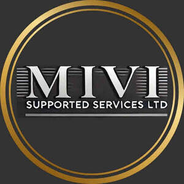

Trade Mark Journal No.2025/035 29 August 2025
UK00004251584 19 August 2025 (41)

- Class 41
- Business training; Business training services; Training; Training in the field of business management; Training in business skills; Organising of business training; Education and training in the field of business management; Organisation of training seminars; Management training services; Training services; Organisation of training courses; Providing training courses on business management; Training services relating to business management; Employment training; Staff training services; Teacher training services; Training services related to business; Education and training services in relation to business management; Provision of training services for business; Provision of training services for industry; Education services relating to business training; Training or education services in the field of life coaching; Personal development training; Training and education services; Education and training services; Provision of training in the field of hygiene for the catering industry; Educational and training services; Education and training; Training in administration; Arranging professional workshop and training courses; Educational and training programs in the field of risk management; Providing of training; Providing training; Educational services relating to sales training; .
Mivi Supported Services Ltd